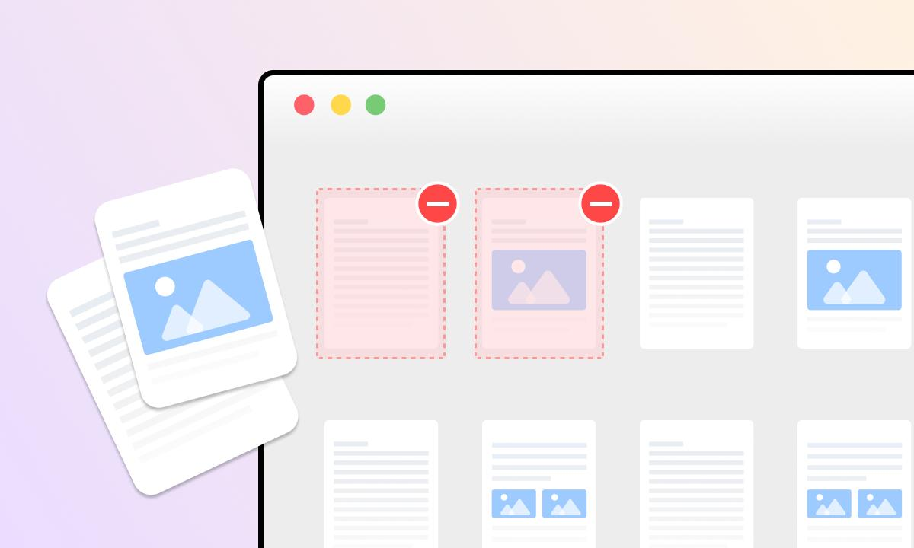
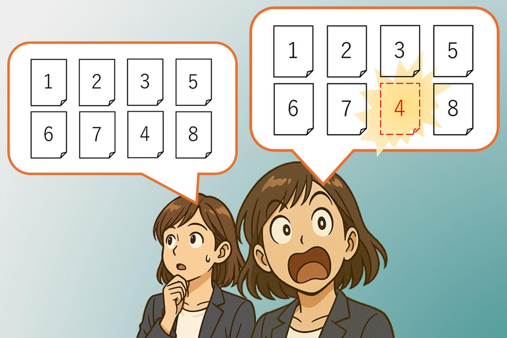
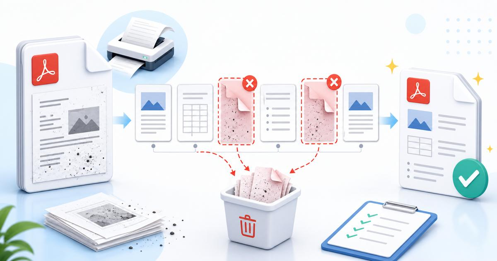

Have you ever received a 40-page report only to discover that one page is blank, outdated, duplicated, or not meant to be shared?
Rebuilding the entire document just to remove one page is usually unnecessary. You can often delete the unwanted page directly, save a separate copy, and keep the rest of the PDF intact.
The tricky part is making sure you remove the correct page. Printed page numbers do not always match the page positions shown by a PDF viewer, and deleting a page changes the total page count.
This guide explains how to remove one or more pages from a PDF, verify the result, and avoid common mistakes when preparing documents for work, school, applications, or business use.
Quick answer: How do you remove one page from a PDF?
- Make a copy of your original PDF.
- Open the copy in a PDF editor or page-removal tool.
- Review the page thumbnails to identify the unwanted page.
- Select and delete the correct page.
- Save or download the edited PDF under a new filename.
- Reopen the result and verify the page count, page order, and surrounding content.
PDF editing tools such as Adobe Acrobat provide page-organization features for deleting individual pages or selected ranges without requiring you to recreate the entire document.
1. Identify the page you actually want to delete
Before removing anything, identify the unwanted page by its content, not just its number.
Imagine you have a 24-page business report. The fourth page in the PDF viewer contains an outdated approval form, but the page itself is labelled “Page 2” because the document has a cover and introductory pages.
If you delete the wrong page by relying only on the printed number, you could remove important content.
Check three things:
- PDF position: The page's position in the document viewer.
- Printed page number: The number displayed on the actual document, if present.
- Page content: The heading, image, form, or text that identifies the page.

Example: Printed number versus PDF position
| PDF Position | Content | Printed Number |
|---|---|---|
| PDF 1 | Cover | No number |
| PDF 2 | Contents | i |
| PDF 3 | Overview | 1 |
| PDF 4 | Old form | 2 |
| PDF 5 | Results | 3 |
| PDF 6 | Charts | 4 |
| PDF 7 | Summary | 5 |
| PDF 8 | Appendix | 6 |
Example only: PDF page 4 contains the unwanted form, even though the printed page number is 2.
Best practice: Preview the page before you delete it. If your PDF editor shows thumbnails, use the page content and its viewer position together to confirm your selection.
2. Remove the unwanted page using QuickToolsPK
For a straightforward task, a dedicated Delete PDF Pages tool can be more convenient than rebuilding the document in a word processor.
Open your live QuickToolsPK Delete PDF Pages page and follow the controls shown there. Confirm that the tool supports your file and intended operation before uploading a document.
Step-by-step workflow
- Create a backup. Keep the original file untouched.
- Open the Delete PDF Pages tool. Use the current QuickToolsPK page.
- Select the PDF. Choose the document stored on your device.
- Find the unwanted page. Use thumbnails, page previews, or the page-selection controls provided by the tool.
- Select the correct page. If the tool supports multiple selections, check each selected page before continuing.
- Apply the deletion. Confirm the operation if the tool asks.
- Download the result. Save it as a new file, such as
report-pages-removed.pdf. - Verify the output. Open the new PDF and check the total number of pages, page order, and content around the deletion.
The exact interface and available options depend on the tool. Do not assume that every PDF editor uses the same buttons or selection method.
3. Delete one page, multiple pages, or a blank page
The process is similar for different types of unwanted pages, but the verification step may vary.
Remove one unwanted page
Use this when a document contains one outdated form, an accidental duplicate, or an irrelevant page. Preview the page before deleting it.
Remove multiple selected pages
If two or more pages need to be removed, check each selection carefully. Some tools allow individual page selections; others may accept a page range.
Remove an accidental blank page
Confirm that the page is genuinely unnecessary. A blank page may be intentional in a booklet, a double-sided print layout, or a form with separate sections.
4. Check the final page count
After deleting pages, make sure the resulting PDF contains the expected number of pages.
Use this simple calculation: Expected pages = Original pages − Pages removed
| Original PDF | Pages removed | Expected result |
|---|---|---|
| 24 pages | 1 | 23 pages |
| 40 pages | 2 | 38 pages |
| 12 pages | 3 | 9 pages |
| 100 pages | 1 | 99 pages |
This calculation helps catch accidental extra deletions, but it does not prove that you removed the correct page. You must also inspect the content.
Final verification checklist
- The output has the expected number of pages.
- The unwanted content is gone.
- The page immediately before the deletion is intact.
- The page immediately after the deletion is intact.
- The remaining pages are in the correct order.
- Tables, forms, images, and visible page numbers still make sense.
- Important links, bookmarks, or interactive fields work if the document relies on them.

5. Avoid page-number confusion after deletion
Deleting a page changes the position of the pages that follow it. However, the printed page numbers on the remaining pages may not change automatically.
For example, suppose a report originally has 10 PDF pages, with printed page numbers 1 through 9 after an unnumbered cover. If you remove the page printed as “4,” the following page may still display “5.”
That is not necessarily an error. It depends on whether the document's numbering is meant to reflect its original publication or its new page sequence.
Before editing, decide which outcome you need:
- Keep the original printed numbers: Useful when the PDF is an excerpt from a larger report and the numbering refers to the original source.
- Use continuous new numbering: Useful when the edited PDF will be presented as a standalone document.
- Use section-specific numbering: Useful for documents with covers, appendices, Roman numerals, or separate chapters.
PDF navigation labels and visible page numbers are different things. If you need to renumber a document, use a feature that explicitly edits page labels or adds visible page numbers rather than assuming page deletion will do both.
6. Preserve the original PDF
Never rely on a single edited copy when the document matters.
A simple file-naming approach can prevent mistakes:
annual-report-original.pdfannual-report-edited.pdf
Keep the original until you have checked the edited version and confirmed it meets your needs.
This is especially useful when handling:
- Job applications and résumés
- School assignments and course materials
- Business reports and presentations
- Invoices and statements
- Contracts and signed documents
- Government or administrative forms
If the PDF contains confidential information, also check the tool's privacy policy and processing method before uploading it. A local or approved offline tool may be more suitable for sensitive documents.
7. Does deleting a page reduce PDF quality?
Removing a page does not inherently require the remaining pages to be converted into images or recreated. A page-organization tool may remove the selected page while retaining the remaining document content. Adobe describes page deletion as a way to remove unwanted content while maintaining the document's structure and interactive elements.
However, results can depend on the tool and the document.
After editing, check whether:
- Text remains selectable where it was selectable before.
- Images and diagrams appear as expected.
- Links and bookmarks still work.
- Forms and interactive elements behave correctly.
- The output file opens in your usual PDF viewer.
Do not judge the result only by file size. A smaller PDF may be perfectly fine, but a change in size alone does not prove that the content is correct or that quality has been preserved.
8. Common mistakes when removing PDF pages
- Mistake 1: Deleting by printed page number alone. A printed page number may not match the page's position in the PDF viewer. Check the actual page content and position.
- Mistake 2: Forgetting to verify the page count. If you intended to remove one page from a 24-page PDF, the expected output is 23 pages. A different count is a reason to investigate before sharing the file.
- Mistake 3: Overwriting the original. Keep a backup so you can recover the original if you remove the wrong page.
- Mistake 4: Removing a blank page that serves a purpose. Blank pages can be intentional, particularly in print-ready documents or forms. Review the context before deleting one.
- Mistake 5: Assuming printed numbering will update automatically. The PDF's page order may change while visible page numbers remain unchanged. Decide whether you need to preserve or update the numbering.
- Mistake 6: Skipping the final preview. A successful download does not prove that the right page was removed. Inspect the pages surrounding the deletion and verify the output.
9. PDF page removal for users in the USA, UK, Canada, and Australia
The basic process is the same regardless of country, but the reason for removing a page may differ.
- USA: You may need to remove an outdated attachment from a job application, report, or business submission.
- UK: You may need to remove an unnecessary page before sending a form or professional document.
- Canada: You may need to remove a duplicate or blank page from a school, office, or administrative PDF.
- Australia: You may need to prepare a shorter report or remove an irrelevant page before submitting an online document.
- Other regions: The same workflow applies when a recipient requests a specific page range or a cleaner PDF.
These are examples of common use cases, not claims about country-specific PDF rules. Always follow the recipient's instructions, especially when preparing legal, academic, or official documents.
10. Final pre-download checklist
PDF page-removal checklist
- Before editing: I saved a separate copy of the original PDF. I identified the unwanted page using its content and PDF position. I checked whether the page may be intentionally blank.
- During deletion: I selected only the page or pages I intended to remove. I reviewed all selected thumbnails or page ranges before applying the change.
- After editing: The output page count matches the expected calculation. The unwanted page is gone and surrounding pages remain intact. The remaining page order is correct. Visible page numbers are appropriate for the final document. Important links, bookmarks, forms, and images still work where relevant. I reopened the downloaded PDF and checked it before sharing.
- Preservation and privacy: The original file remains available as a backup. I used a suitable processing method for the document's sensitivity. The edited file has a clear filename so it will not be confused with the original.
This checklist helps you review the result; it does not replace checking the actual PDF.
Conclusion
You do not need to rebuild an entire PDF just to remove one unwanted page. Identify the page by its content and viewer position, delete it with a suitable page-management tool, and save the result as a separate file.
Before sharing the edited document, confirm the final page count, check the pages around the deletion, and make sure the remaining content and page numbering are correct. Keeping the original PDF gives you a reliable fallback if anything goes wrong.
Need to remove a blank, duplicate, or outdated page? Use QuickToolsPK's Delete PDF Pages tool after checking its current functionality and privacy details.